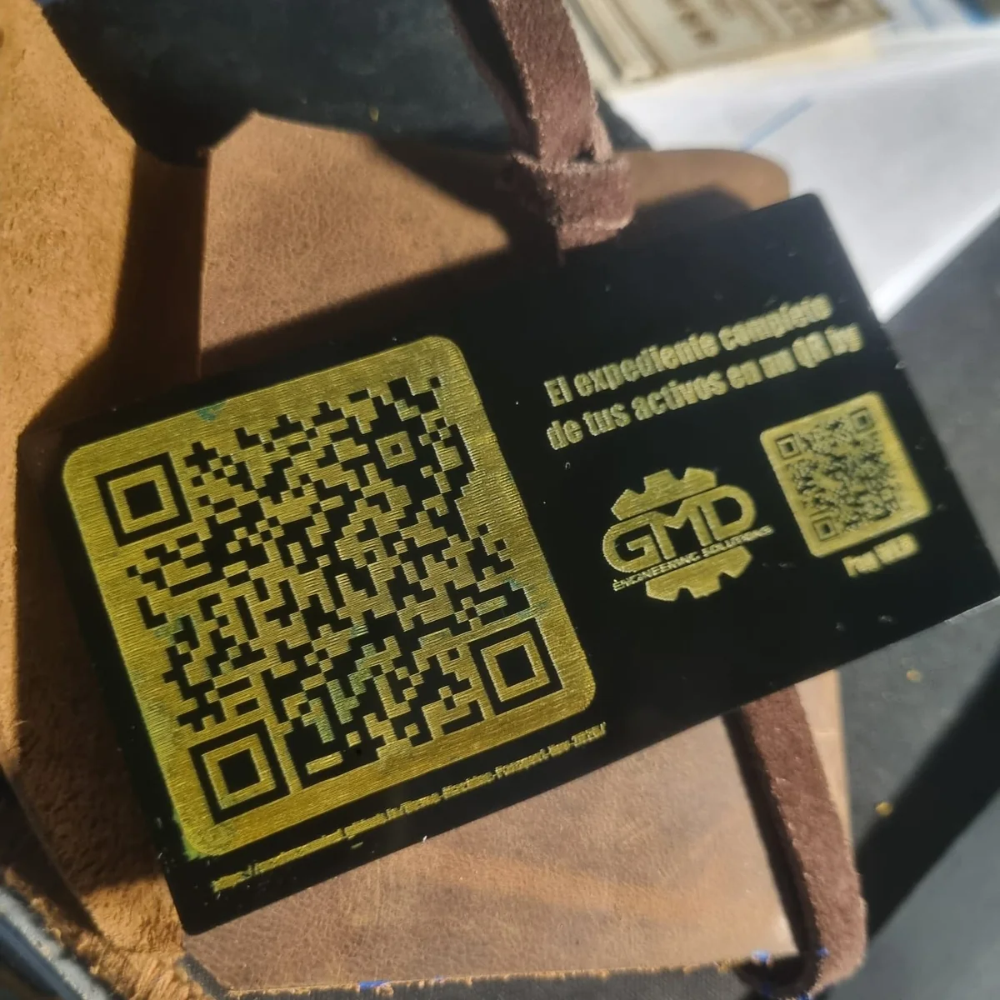
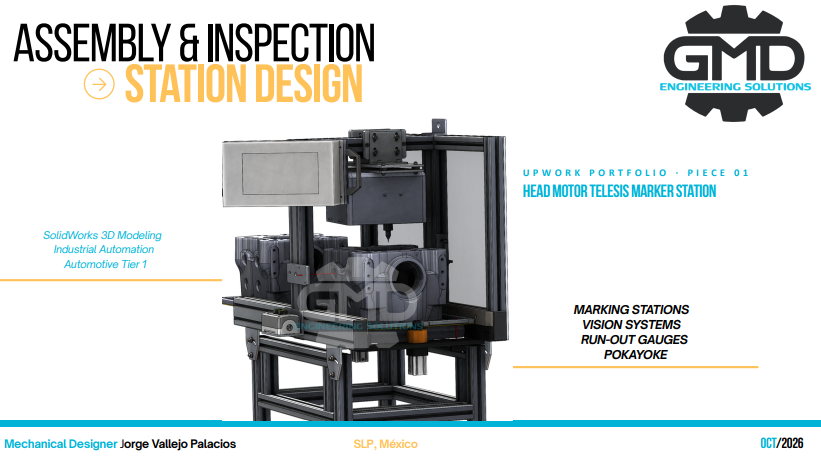
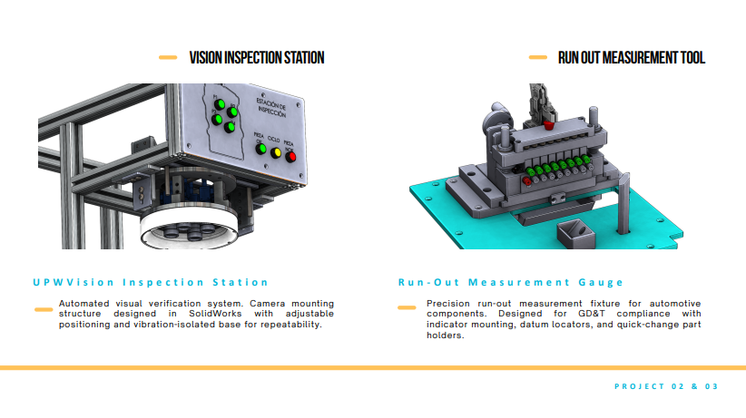
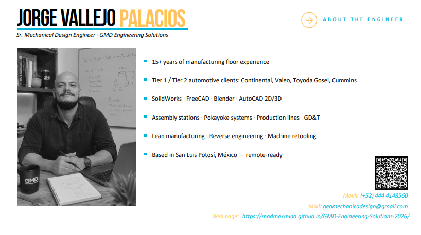
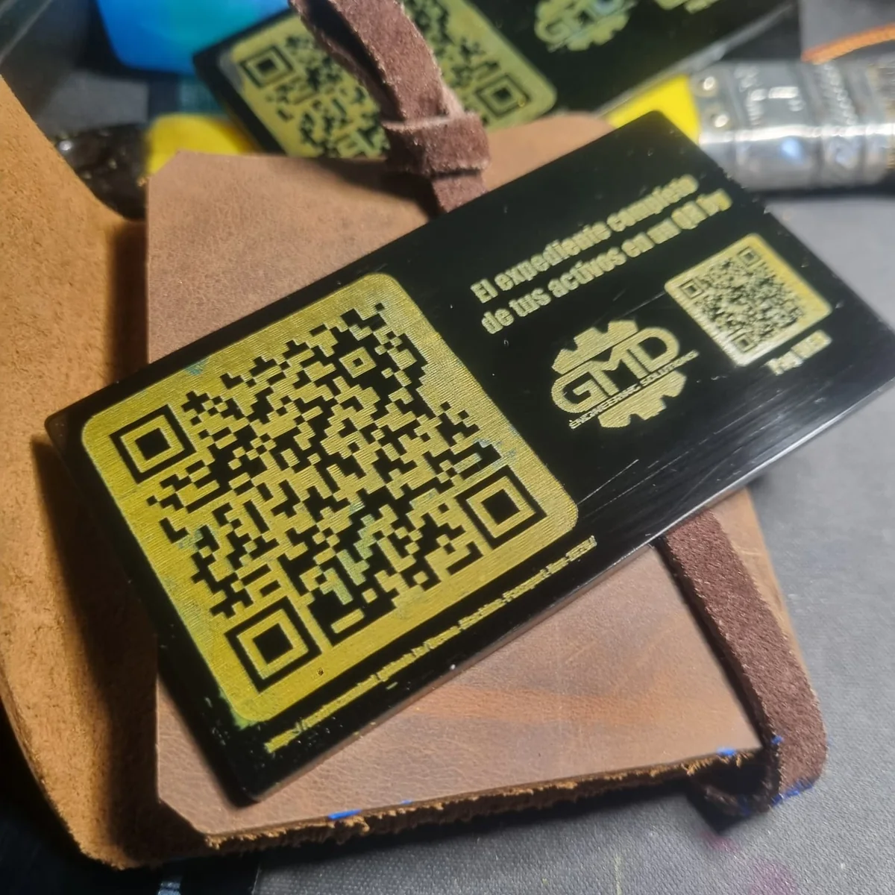
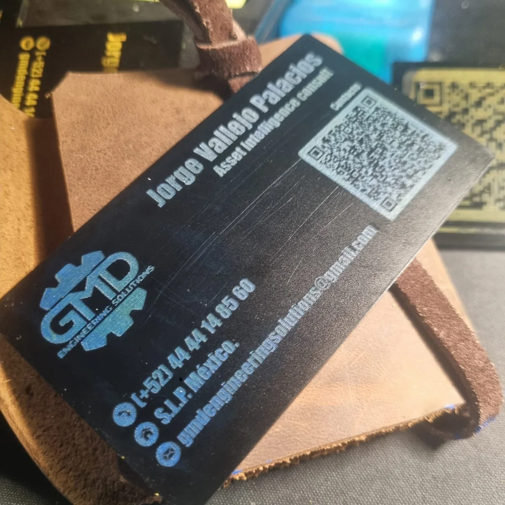
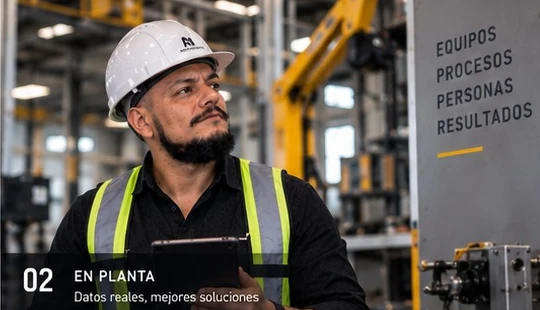
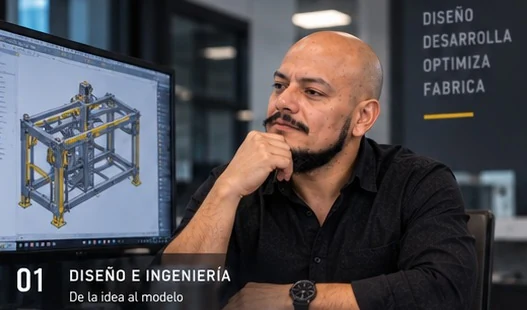
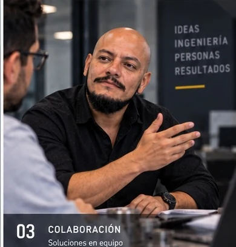
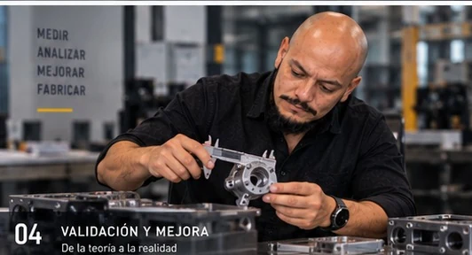

Un diseño necesita revisión antes de fabricar.
Ensambles, interfaces, tolerancias o condiciones de manufactura que conviene evaluar antes de liberar recursos.
Ver ingeniería mecánicaGMD ENGINEERING SOLUTIONS · SAN LUIS POTOSÍ, MÉXICO
Desarrollamos soluciones de diseño y revisión mecánica, diagnóstico industrial, expedientes digitales y seguimiento de brechas documentales para empresas de manufactura.

MUESTRA FÍSICA / MP–01 IDENTIFICACIÓN DIGITAL DE ACTIVOSPUNTO DE PARTIDA
Los proyectos de ingeniería comienzan con una necesidad concreta: un diseño por revisar, un activo sin información ordenada o una decisión técnica que requiere mejores datos.
Ensambles, interfaces, tolerancias o condiciones de manufactura que conviene evaluar antes de liberar recursos.
Ver ingeniería mecánicaPlanos, manuales, especificaciones y antecedentes distribuidos entre archivos, sistemas y personas.
Ver Machine PassportUna máquina, proceso o situación técnica requiere levantamiento, revisión de información y hallazgos priorizados.
Ver diagnóstico industrialCAPACIDADES GMD
Cada línea puede abordarse de forma independiente o formar parte de un proyecto de mayor alcance, según la necesidad y los entregables acordados.
Entender la situación técnica antes de decidir qué hacer.
Salida: contexto, evidencia, hallazgos y ruta de decisión, de acuerdo con el alcance.
Convertir cada activo en una referencia técnica identificable y consultable.
Salida: expediente digital estructurado y asociado al activo.
Conocer el productoConvertir información y evidencia en control de brechas, responsables y acciones.
Salida: matriz de brechas y plan de seguimiento, según alcance.
Resolver necesidades de diseño, modificación, documentación o reconstrucción mecánica.
Salida: modelo, planos, reporte de hallazgos o paquete técnico acordado.
El alcance, la profundidad de revisión y los entregables se definen para cada proyecto antes de iniciar.
INGENIERÍA APLICADA
Diseño de estaciones, sistemas de inspección y herramentales de medición para resolver necesidades concretas de manufactura.



Imágenes de portafolio compartidas por GMD. Los alcances específicos se describen de acuerdo con la documentación disponible.
GMD · INDUSTRIAL ASSET INTELLIGENCE
PRODUCTO / 02
Machine Passport relaciona una identificación física mediante QR con un expediente digital organizado. El contenido se estructura a partir de la información disponible y de los requerimientos definidos para cada activo.
Sobre la demostración: es un prototipo de interfaz con datos ficticios y acciones simuladas en el navegador. No es una plataforma productiva conectada a una base de datos ni representa controles de acceso implementados.
Identidad del activoID, descripción y ubicación.
Información técnicaEspecificaciones y datos disponibles.
DocumentaciónPlanos, manuales y archivos.
Evidencia y antecedentesRegistros definidos en el alcance.
IDENTIFICACIÓN FÍSICA · PLACA MACHINE PASSPORT


PROCEDIMIENTO GMD
El proceso común de GMD es entender, levantar y revisar, estructurar, resolver, entregar y escalar sólo cuando exista una necesidad definida.
Problema, contexto, alcance y criterio de aceptación.
Condiciones de campo, documentos, modelos y evidencia disponible.
Organizar datos, documentos, hallazgos y referencias técnicas.
Diseñar, auditar, evaluar, documentar o recomendar según el servicio.
Presentar el resultado con el nivel de detalle y formato acordados.
Definir una siguiente fase sólo cuando los resultados y la necesidad lo justifiquen.
GMD · INDUSTRIAL ASSET INTELLIGENCE
SOLUCIÓN / 03
Organiza la información técnica, identifica brechas documentales, asigna responsables y da seguimiento a las acciones pendientes. Una visión estructurada para conocer qué está listo, qué falta y qué requiere atención antes de una auditoría.
Nota: demostración de interfaz y flujo de trabajo con escenario ilustrativo. No constituye dictamen, certificación ni evaluación oficial; la preparación depende de validar la información y los requisitos aplicables.
Abrir Asset Integrity en pantalla completa ↗EXPERIENCIA Y HERRAMIENTAS
GMD integra experiencia profesional en diseño mecánico y manufactura con herramientas y métodos desarrollados para capturar, revisar y organizar información técnica.
Los ejemplos de demostración se identifican como prototipos. Los resultados de proyectos de clientes sólo se publican con evidencia y autorización.
Demostración navegable de identidad del activo, expediente, revisión guiada, captura, calidad de datos e historial de ejemplo.
Abrir demostraciónPrototipo de apoyo para levantamiento y organización de información de activos y layouts. La aplicación se valida según el alcance del proyecto.
Muestra de herramienta disponible para revisión técnica.Revisión de CAD, ensambles, tolerancias, interfaces y manufacturabilidad. El reporte se delimita por archivos, profundidad y criterios acordados.
Entregable: hallazgos, riesgos y recomendaciones.Marcos de demostración para organizar contexto, evidencia, brechas, prioridades y acciones. No se presentan como resultados de una planta cliente.
La aplicación se adapta al activo y al alcance solicitado.



QUIÉN DESARROLLA GMD
Diseñador industrial especializado en diseño mecánico, con más de 15 años de experiencia profesional en entornos de manufactura. Su trayectoria integra desarrollo mecánico, revisión de diseño, documentación técnica y resolución de necesidades industriales.
GMD trabaja con una estructura especializada y un alcance definido por proyecto. Cuando una actividad requiere certificación, dictamen o intervención acreditada, se delimita la responsabilidad y se coordina con el especialista u organismo correspondiente.
ALCANCE Y CRITERIOS
Las respuestas describen el alcance general. Cada proyecto se confirma mediante una revisión de requerimientos.
No. Se plantea como una estructura de identificación y consulta de información técnica del activo. La sustitución o integración con un CMMS no forma parte de la oferta base y tendría que evaluarse por separado.
Se parte de la información disponible. El levantamiento y el diagnóstico pueden identificar faltantes; la generación o reconstrucción de documentos se cotiza según su naturaleza y el alcance técnico.
GMD desarrolla actividades de ingeniería, revisión y documentación dentro de su competencia. Los dictámenes, inspecciones o certificaciones que exijan acreditación o autorización específica deben ser realizados por los profesionales u organismos correspondientes.
Después de conocer el activo, la información disponible, la profundidad del trabajo y los entregables requeridos. No se publican plazos universales porque dependen del alcance y de la disponibilidad de información.
Sí. La viabilidad de comenzar con un activo, diseño o necesidad puntual se revisa en la conversación inicial y se define mediante un alcance específico.
PRIMER PASO
Cuéntanos si se trata de un activo, una máquina, una línea, un diseño o una brecha documental. Revisaremos el contexto y definiremos si GMD puede atenderlo.